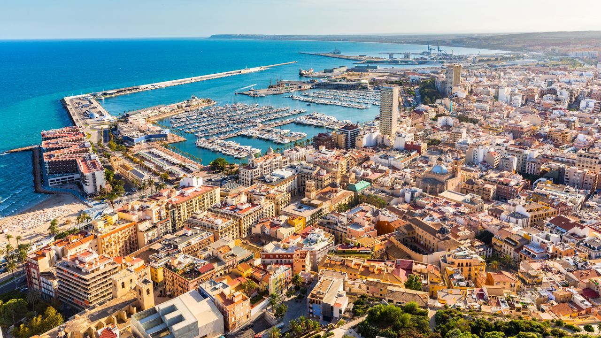
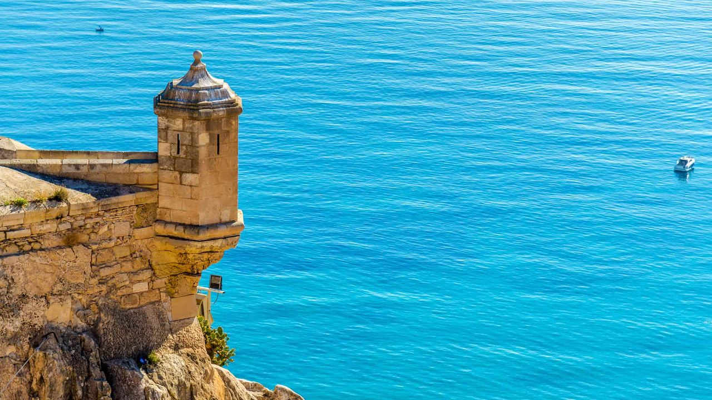
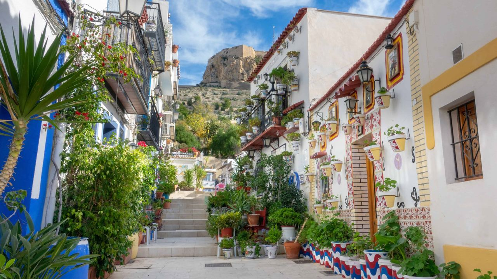
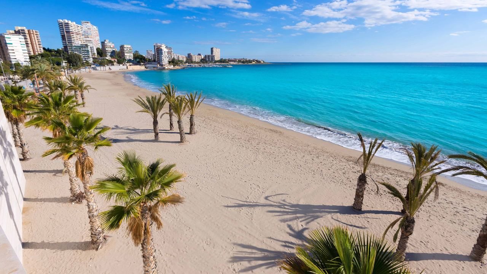
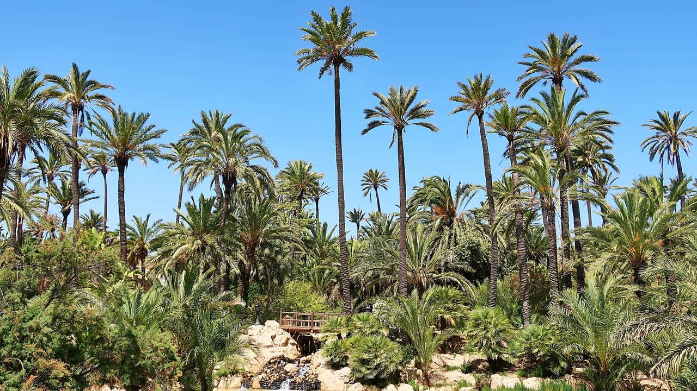

Places · Costa Blanca
Alicante: What to See in Spain's Sunniest City
 By Lucyna Gacek · · updated · 3 min read
By Lucyna Gacek · · updated · 3 min read

In short: Alicante is the capital of the Costa Blanca, about 10 km from its international airport. Its top sights are Santa Bárbara castle on Mount Benacantil, the Santa Cruz quarter, the Basilica of Santa María, the palm-lined Explanada de España, Casa Carbonell, the MARQ archaeological museum and the central market. The city beach of El Postiguet is in the centre, and San Juan beach stretches for about 7 km to the north. Easy day trips include Tabarca island, Elche's UNESCO palm grove and the Canelobre caves. The city has about 2,850 hours of sun a year.
Alicante is a port city with a relaxed Mediterranean pace: palm trees, sea views from almost every hill and a lively old town at the foot of a castle. It is also a working city, with a university, a big hospital and shops that stay open all year.
Here is what to see, the best beaches and some practical tips for your visit.
When to visit
Alicante is one of the sunniest cities in Spain, with about 2,850 hours of sun a year. Spring and autumn are ideal for sightseeing, with highs of 21–25 °C in April, May and October. The sea is warm enough for swimming from June to October, and in August daytime highs are around 31 °C. Winter is mild, about 17–18 °C during the day from December to February. Read more in the weather in Alicante.
Getting from the airport
- Bus C6 – the cheapest option, from outside arrivals to the centre in about 30 minutes, with tickets around €4.
- Taxi – about 20 minutes to the centre, usually €25–30.
- Rental car – the best choice if you plan to explore the coast. Book ahead to save time at the desk.
Santa Bárbara castle

The castle on Mount Benacantil, 166 m above the sea, has Moorish origins and was rebuilt many times. Inside you can walk the walls and courtyards, see small exhibitions and enjoy the best view of the city, the port and the coast. A lift from the Postiguet side takes you up; walking down through the old town is a pleasant way back.
The old town and the Santa Cruz quarter

Below the castle, the white houses of Santa Cruz climb the hill with steps, flower pots and painted tiles. In the old town (El Barrio) see the Gothic Basilica of Santa María, the Co-Cathedral of San Nicolás and the 18th-century town hall. Children love the Carrer dels Bolets, a street with giant mushroom sculptures. In the evening the old town fills with tapas bars.
The Explanada, the port and the museums
The Explanada de España, paved with millions of wave-patterned tiles and lined with palm trees, runs along the marina. At its end stands Casa Carbonell (1925), one of the city's most beautiful buildings. Museums worth your time include the MARQ archaeological museum, named European Museum of the Year in 2004, the MACA museum of contemporary art and the Gravina fine arts museum. Do not miss the Mercado Central for fresh fish, fruit and local rice.
Beaches

- El Postiguet – the city beach under the castle, a few minutes' walk from the old town.
- La Albufereta – a small, calm bay a short tram ride north.
- San Juan – about 7 km of fine sand towards El Campello, with a promenade and water sports.
See our guide to Costa Blanca beaches.
Day trips

- Tabarca – Spain's smallest inhabited island, a marine reserve with a walled village, reached by boat from the port in about an hour.
- Elche – about 25 minutes away, with Europe's largest palm grove, a UNESCO World Heritage site.
- Canelobre caves – a huge cave near Busot, about 30 minutes inland.
- Torrevieja – the pink salt lake and La Mata natural park, about 45 minutes south.
- Calpe – the Peñón de Ifach, about an hour north. See what to see in Calpe.
Frequently asked questions
How far is Alicante airport from the city centre?
About 10 km. The C6 bus takes around 30 minutes and a taxi around 20 minutes.
What is Alicante best known for?
Its castle, sunny climate, palm-lined Explanada, beaches and the Hogueras de San Juan festival in June.
What is the best beach in Alicante?
El Postiguet is the most central. San Juan is the longest and best for families and water sports.
Is Alicante worth visiting in winter?
Yes. Days are usually sunny and around 17–18 °C, ideal for walking and sightseeing without the summer crowds.
Living in Alicante
Alicante combines city life, beaches and the airport on the doorstep, which makes it one of the easiest places on the coast to live. Compare prices in our Alicante property market guide, see our homes for sale in Alicante or get in touch.
Sources: Alicante City Tourism · AEMET – Climate normals 1991–2020, Alicante · MARQ – Archaeological Museum of Alicante · Aena – Alicante-Elche Miguel Hernández Airport